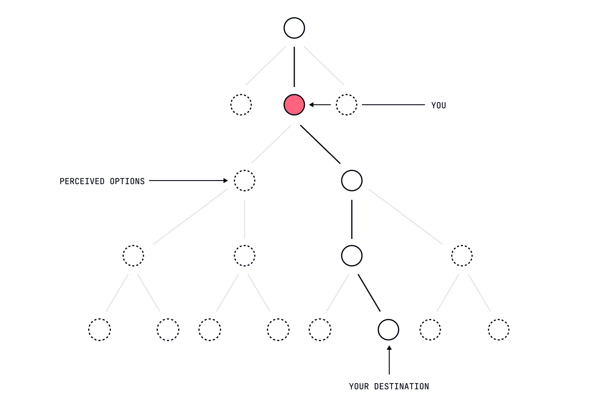

The Landscape of Choice
A practical map for navigating the illusion that you actually have any agency at all.
Dismantling The Illusion
What if I told you that this comforting notion that you're the author of your life story, is an elaborate fiction your consciousness tells itself? Not in some abstract philosophical sense, but in a very literal, neurologically demonstrable way.
What if I told you that this comforting notion that you're the author of your life story, is an elaborate fiction your consciousness tells itself? Not in some abstract philosophical sense, but in a very literal, neurologically demonstrable way.
The Deterministic Reality
Consider a simple function that doubles a number:
function double(x) {
return x * 2
}This function is deterministic which means it will always return the same output for the same input. If you pass in 4, it will always return 8. The output is entirely determined by the input.
You are the same way. Your choices are simply the outputs of a complex function that takes in your genetic makeup, past experiences, and current circumstances as inputs. You will always produce the same output for the same input.
The only reason you think you have a choice is because the function is so complex that you can't see all the inputs. In reality, it's many functions chained together, each one feeding into the next.
// Chain these functions together
function processGenetics(dna) {
// First transformation
return geneticTraits(dna)
}
function applyExperiences(traits) {
// Feed output into next function
return conditionedBehaviors(traits)
}
function generateDecision(behaviors) {
// Final transformation
return currentChoice(behaviors)
}
// This will always produce exactly 100 when input is 4
const result = generateDecision(applyExperiences(processGenetics(yourDNA)))Understanding Your Decision Space
Your decisions are not the result of some grand, conscious deliberation. They are the product of a complex interplay of factors that you have no control over. In reality, your decisions are shaped by:

- Biological Imperatives: The genetic algorithms running in the background of your consciousness, quietly determining your preferences while letting you believe they're "choices".
- Environmental Conditioning: The invisible hand of your upbringing, guiding you toward predetermined outcomes while maintaining the comforting illusion of deliberation.
- Psychological Patterns: Those recurring thought loops you mistake for deliberation but are actually just your brain running the same subroutines it always has.
- Social Pressures: The subtle (and not-so-subtle) ways other predetermined beings influence your predetermined outcomes.
- Resource Constraints: The practical limitations that narrow your "choices" to the point of inevitability.

The Myth of Free Will
Your brain makes decisions before you are even aware of them. Neuroscience has repeatedly demonstrated that your conscious mind is merely informed of decisions after they've been made by unconscious processes. Your sense of having chosen is simply your consciousness creating a narrative to explain what already happened.
It's like when you ask a child if they want to eat broccoli or ice cream. We know they'll say ice-cream, but we pretend to give them a choice. The child feels empowered, but in reality broccoli was never on the table. The same is true for you.
Practical Implications
Liberation Through Understanding
When we finally accept that our decisions are predetermined by factors outside our control:
- Self-Blame Dissolves: That embarrassing email you sent? You couldn't have done otherwise.
- Anxiety Reduces: Worried about making the right choice about that job offer? Don't be.
- Compassion Increases: That person who wronged you? They were simply acting out their programming.
- Action Simplifies: Once you stop pretending you're in control, you can simply observe what you do.
Moving Through the Landscape
Rather than exhausting yourself with the pretense of "making the right choice," you can:
- Observe your decision-making patterns with the clinical interest of an anthropologist studying a strange tribe.
- Understand your predetermined tendencies as you would understand the predictable behavior of any natural system.
- Accept your limitations and constraints as you would accept gravity.
- Move forward with the effortless grace of water flowing downhill.
Embracing Determinism
Understanding the deterministic nature of decision-making doesn't mean giving up. It means:
- Accepting that your path was carved out by forces beyond your control long before you became aware of it.
- Releasing the burden of pretending to be in control.
- Moving forward with the effortless grace of water flowing downhill.

The Path Forward
Next Steps
In your next lesson, we'll explore "The Paradox of Agency" — understanding how you can feel like you're making decisions while simultaneously having none at all. If you continue this course you'll understand every decision was pre-placed "in front of you".
Remember: You're learning to feel more free precisely by abandoning the inevitable mythology of your predetermined nature. You'll find your decision score naturally increases as a result.
On this page